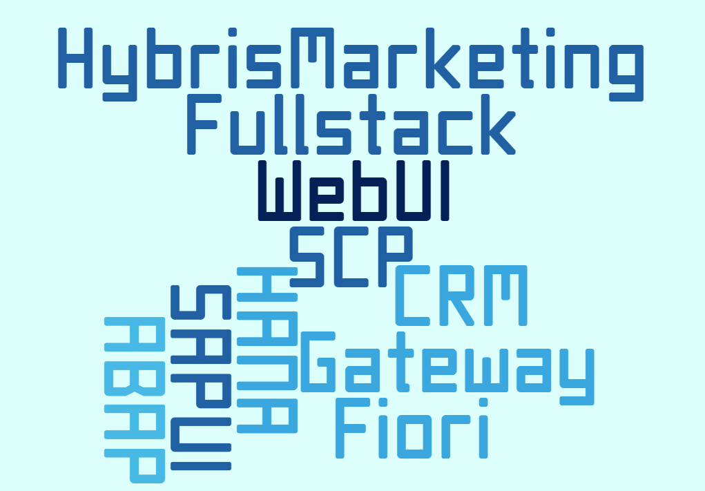
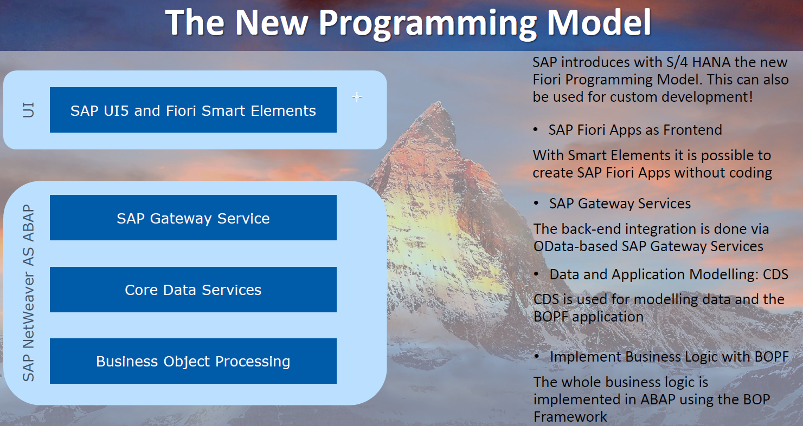
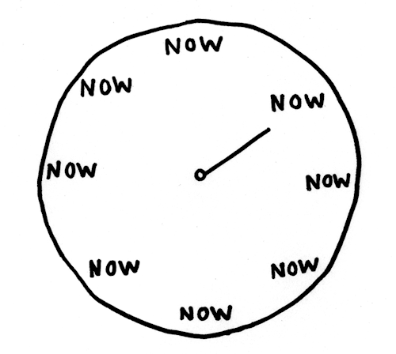

The Sorrows of Young UI5 Developers
Lessons learned of 3 Years UI5 and Gateway projects
by Markus Wenzel & Robert Euler
16.05.18 @ AOK Systems
Our Background
The journey from a typed ABAP world to the "freedom" of JavaScript
Fun with JavaScript Typesystem
Types
- String
- Number (including the funny NaN -> Not a Number)
- Boolean
- Null
- Undefined
- Object
Fun with JavaScript Typesystem (2)
Lets taste the "freedom"
- typeof NaN -> "number"
- NaN == NaN -> false
- 0 == false -> true
- typeof [] == typeof null -> true (both are Objects)
- null instanceof Object -> false
- typeof "testString" -> "string"
- "testString" instanceof String -> false
- []+[] -> ""
- {}+[] -> 0
Fun with JavaScript Scopes
- There is no Blockscope in classic JS! Only functions create a scope
- Variable Declarations are always at the start of the scope (called hoisting)
- With ES6 the new Keywords "let" and "const" come to save us
if (true) {
var name = 'I really like';
let skills = 'ES6';
}
// logs 'I really like sapui5' because of hoisting
console.log(name + ui5);
// Uncaught ReferenceError: skills is not defined
console.log(skills);
var ui5 = ' sapui5';
Fun with JavaScript Context
- The keyword "this" points to the current Execution Context. Which changes e.g. when using asynchronous functions
- Again with ES6 the new Arrow-Function "=>" comes to save us or use .bind or jQuery.proxy
this.odataModel.read("/Accounts", {
success: function(data, response) {
if(data){
//error this.showResults is not a function
this.showResults(data.results);
}},
error: jQuery.proxy(function(error) {
// works because jQuery.proxy passes the context
this.showMessage(error.message);
}, this)});
Now we know JS can be tricky, but what about SAPUI5?
The WebIDE: The optimal UI5 dev-tool?
Sadly not....
The Competitors are too strong:
Compared to the cool kids?

Then why use UI5?
- SAP Marketing is strong. Customers prefer the SAP supported solution.
- A lot of things come out of the box: authentication, responsiveness, lots of controls,...
- Decent themes, Odata handling, Test-Framework and more are already included
- You can be really productive and fast. Even without Fiori Elements.
system environment
Expectations
vs.
Reality
Expectations
stolen from Tobias Trapp & Martin Fischer
Reality
- Netweaver 7.31
- Embedded Deployment
- SAPUI5 version 1.28
But Why????
A typical project for us
- Small UI5 Apps/Tools complement other UIs on BW or CRM System
- Customers are not willing to spend money on Frontend Server
- Patching the systems would require to update other business components as well
Consequences and how to deal with them?
Frontend
| Expectation | Reality |
|---|---|
| Fiori Elements | Custom Development |
| Newest Features & Elements | Lots of Restrictions in old Versions (or use OpenUI5) |
| Well Documented Examples | Sometimes no Documentation at all -> StackOverflow!!! |
Backend
| Expectation | Reality |
|---|---|
| CDS and BOPF | SADL Mapping of Tables/Views + Custom Development of Services |
| Newest ABAP Features | No Table or Constructor Expressions |
| Standard Interfaces for CRM | Not fully implemented, sometimes buggy or not working as expected |
Expectations in the Project-Team
- There is a plug and play "standard" for UI5 Interfaces, atleast in a crm system
-
It's only one added field with valuehelp
- The UI can be fully customized through the backend
When does it have to be ready?
Our Lessons (1)
Use the tools you got!
- Use and practice a sapui5 development workflow in a decent IDE. Git and a good build process saves a lot of time.
- Keep an eye out for cool new tools and features to include in your Workflow. Babel, Typescript or Webpack might be candidates.
- Let SADL do some backend work for you. Exposing Tables, Views or CDS works decent even in older systems.
Our Lessons (2)
Talk to your Team and Clarify the costs!
- The cool customizable and dynamic Table with language dependent description from the backend won't come for free
- The expectations of what the Framework does for you might differ greatly from reality
Our Lessons (3)
Be realistic and involve the user!
- Estimate the efforts realistically. Development for different Browsers (especially IE) can be time consuming.
- Involve the users early. It increases the chances that he will be working with the new UI happily.
Our Lessons (4)
Have some fun while using UI5 and other new cool technologies!